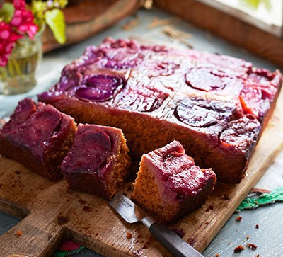

Plum Cake

Plum cake refers to a wide range of cakes made with either dried fruit or with fresh fruit.
There is a wide range of popular plum cakes and puddings.
Ingredients
- 3 eggs
- ½ cup butter, softened
- ½ cup white sugar
- 1 teaspoon lemon zest
- 1 cup all-purpose flour
- ½ teaspoon baking powder
- 1 ¼ cups plums, pitted and quartered
Steps
- Preheat oven to 375 degrees F (190 degrees C). Grease and flour one 9-inch tube pan.
- Separate the eggs. In a small bowl, beat the egg whites until stiff peaks form, and set aside.
- In a large bowl, cream the butter and sugar. Beat in the egg yolks and the lemon zest.
- Stir together the flour and baking powder and then blend the flour mixture into the creamed mixture.
- Bake in preheated oven until a tester inserted in the center comes out clean, about 40 minutes.